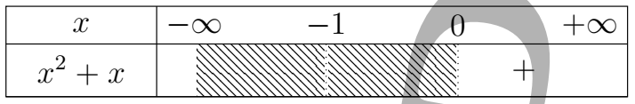
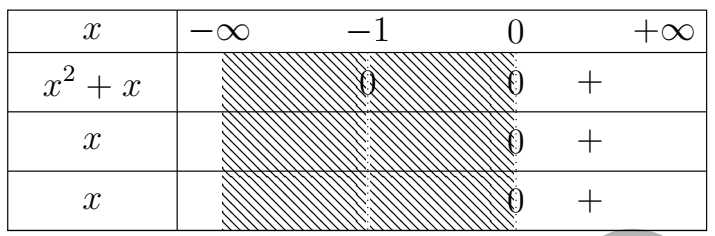
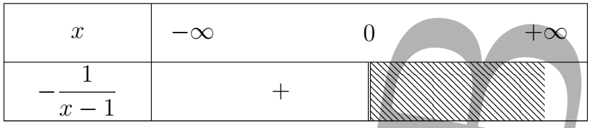
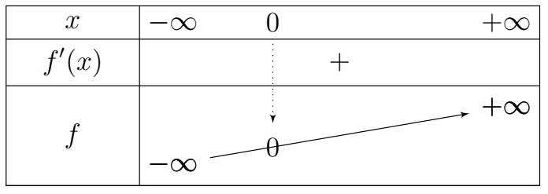

📝 Correction du devoir n°1 du 1er semestre
-
Théorème des valeurs intermédiaires (TVI).
Soit \(f\) une fonction continue sur l’intervalle \([a,b]\).
Pour tout réel \(k\) compris entre \(f(a)\) et \(f(b)\), il existe \(c\in[a,b]\) tel que :
\[ f(c)=k. \]Corollaire.
L’image d’un intervalle par une fonction continue est un intervalle.
En particulier, si \(f(a)f(b)<0\), alors \(f\) admet au moins une solution de l’équation \(f(x)=0\) dans \([a,b]\).
-
Théorème de la bijection.
Si \(f\) est continue et strictement monotone sur un intervalle \(I\), alors :
- \(f\) est bijective de \(I\) vers \(J=f(I)\).
- L’application réciproque \(f^{-1}:J\to I\) est continue.
- \(f^{-1}\) est strictement monotone (même sens si \(f\) est croissante, sens opposé si \(f\) est décroissante).
-
Théorème des accroissements finis (TAF).
Si \(f\) est continue sur \([a,b]\) et dérivable sur \((a,b)\), alors il existe \(c\in(a,b)\) tel que :
\[ f'(c)=\frac{f(b)-f(a)}{b-a}. \]Inégalité des accroissements finis (IAF).
Si, de plus, \(|f'(x)|\le M\) pour tout \(x\in(a,b)\), alors :
\[ |f(x)-f(y)|\le M|x-y|, \qquad \forall x,y\in[a,b]. \] -
\(\displaystyle \text{Si } \lim\limits_{x\to x_0} \frac{f(x)-f(x_0)}{x-x_0}=a \qquad (a\neq0), \) alors \(f\) est dérivable en \(x_0\) et \( f'(x_0)=a. \)
En particulier, \(f\) est localement strictement monotone en \(x_0\) et \(x_0\) n’est pas un extremum.
-
\(\displaystyle \text{Si } \lim\limits_{x \to x_0^-} \frac{f(x)-f(x_0)}{x-x_0} = +\infty,\) alors la dérivée à gauche de \(f\) en \(x_0\) est \(+\infty\).
La pente est verticale du côté gauche (pas de dérivée finie).
-
\(\displaystyle \text{Si } \lim\limits_{x\to x_0} \frac{f(x)-f(x_0)}{x-x_0} = 0, \) alors \(f\) est dérivable en \(x_0\) et f'(x_0)=0
La tangente en \(x_0\) est horizontale.
-
Si \( \lim\limits_{x\to+\infty}f(x)=+\infty, \qquad \lim\limits_{x\to+\infty}\frac{f(x)}{x} =\beta\in\mathbb{R}^{*}, \qquad \lim\limits_{x\to+\infty} [f(x)-\beta x] =+\infty\),
alors la droite d’équation \(y=\beta x+b\) n’est pas une asymptote oblique pour \(f\).
L’écart entre \(f(x)\) et \(\beta x\) diverge vers \(+\infty\).
-
Si \(f\) est continue et strictement décroissante sur \(]-\infty,b]\), alors :\(\displaystyle f( ]-\infty,b])= ]\ell,f(b)]\)
où \(\displaystyle \ell=\lim_{x\to-\infty}f(x) \).
L'intervalle est ouvert à gauche car \(-\infty\) n'est pas un réel.
-
Calculons les limites suivantes : (4 × 1 pt)
\[ \begin{aligned} \lim_{x\to0} \frac{\sqrt{1+\sin x}-1}{\sin2x} &= \lim_{x\to0} \dfrac{\sin x} {\sin2x\left(\sqrt{1+\sin x}+1\right)} \\ &= \lim_{x\to0} \dfrac{\frac{\sin x}{x}} {\dfrac{2\sin2x}{2x}} \times \dfrac{1} {\left(\sqrt{1+\sin x}+1\right)} \\ &= \dfrac{1}{2} \times \dfrac{1}{2} \\ &= \dfrac{1}{4} \end{aligned} \]\[ \mathbf{ \lim_{x\to0} \dfrac{\sqrt{1+\sin x}-1}{\sin2x} = \frac{1}{4} } \]\[ \begin{aligned} \lim_{x\to0} \dfrac{\cos x-1}{x^3+x^2} &= \lim_{x\to0} \dfrac{\cos x-1}{x^2(x+1)} \\ &= \lim_{x\to0} \dfrac{\cos x-1}{x^2} \times \dfrac{1}{x+1} \\ &= -\dfrac{1}{2} \times 1 \\ &= -\dfrac{1}{2} \end{aligned} \]\[ \mathbf{ \lim_{x\to0} \dfrac{\cos x-1}{x^3+x^2} = -\frac{1}{2} } \]\[ \begin{aligned} \lim_{x\to1} \dfrac{\sqrt{x+3}-\sqrt{5-x}} {\sqrt{2x+7}-\sqrt{10-x}} &= \lim_{x\to0} \dfrac{ \left(\sqrt{x+3}-\sqrt{5-x}\right) \left(\sqrt{x+3}+\sqrt{5-x}\right) \left(\sqrt{2x+7}-\sqrt{10-x}\right)} { \left(\sqrt{2x+7}-\sqrt{10-x}\right) \left(\sqrt{2x+7}-\sqrt{10-x}\right) \left(\sqrt{x+3}-\sqrt{5-x}\right)} \\ &= \lim_{x\to1} \dfrac{ \left[x+3-(5-x)\right] \left(\sqrt{2x+7}+\sqrt{10-x}\right)} { \left[2x+7-(10-x)\right] \left(\sqrt{x+3}+\sqrt{5-x}\right)} \\ &= \lim_{x\to1} \dfrac{ 2(-1+x) \left(\sqrt{2x+7}+\sqrt{10-x}\right)} { 3(x-1) \left(\sqrt{x+3}+\sqrt{5-x}\right)} \\ &= \lim_{x\to1} \dfrac{ 2(x-1) \left(\sqrt{2x+7}+\sqrt{10-x}\right)} { 3(x-1) \left(\sqrt{x+3}+\sqrt{5-x}\right)} \\ &= \lim_{x\to1} \dfrac{ 2\left(\sqrt{2x+7}+\sqrt{10-x}\right)} { 3\left(\sqrt{x+3}+\sqrt{5-x}\right)} \\ &= \dfrac{2}{3} \times \dfrac{6}{4} \end{aligned} \]\[ \mathbf{ \lim_{x\to1} \dfrac{\sqrt{x+3}-\sqrt{5-x}} {\sqrt{2x+7}-\sqrt{10-x}} =1 } \]\[ \begin{aligned} \lim_{x\to1} \dfrac{\sin(\pi x)}{x-1} &= \lim_{X\to0} \dfrac{\sin(\pi X)}{X} \\ &= \lim_{X\to0} \pi \dfrac{\sin(\pi X)}{\pi X} \\ &= 1 \end{aligned} \]\[ \mathbf{ \lim_{x\to1} \dfrac{\sin(\pi x)}{x-1} =1 } \] -
Donnons les primitives des fonctions \(f\), \(g\) et \(h\) respectivement sur \(\mathbb{R}\) et \(\mathbb{R}\setminus\{1;2\}\). (3 × 0,5 pt)
\[ f(x)=2\cos(x)-3\sin(x) \]\[ F(x)=2\sin(x)+3\cos(x)+k \]\[ \mathbf{ F(x)=2\sin(x)+3\cos(x)+k } \]\[ g(x) = (3x-1)(3x^2-2x+3)^3 \]\[ G(x) = \dfrac{1}{8}(3x^2-2x+3)^4+k \]\[ \mathbf{ G(x) = \dfrac{1}{8}(3x^2-2x+3)^4+k } \]\[ h(x) = \dfrac{1-x^2}{(x^3-3x+2)^3} \]\[ H(x) = \dfrac{1}{3(x^3-3x+2)}+k \]\[ \mathbf{ H(x) = \dfrac{1}{3(x^3-3x+2)}+k } \]
Soit la fonction \(f\) définie par :
et \( (\mathcal{C}_f) \) sa courbe représentative dans un repère orthonormé \( (O,\vec{i},\vec{j}) \).
-
Déterminons l'ensemble de définition \(D_f\).
(0,5 point)
\[ \text{Posons } f(x)= \begin{cases} f_1(x) & \text{si } x<0,\\[4mm] f_2(x) & \text{si } x\ge0. \end{cases} \]
- \(f_1\) existe ssi \(x-1\neq0\) et \(x<0 \).
- \(f_2\) existe ssi \(x^2+x\ge0\) et \(x\ge0\).
\( x-1 \neq 0 \implies x \neq 1 \text{ et } x<0 \)
\(D_{f_1}=]-\infty;0[\)
Posons \(x^2+x=0\).
\( x^2+x=0 \implies x=0 \text{ ou } x=-1 \)

\(D_{f_2}=[0;+\infty[\)
Donc
\( \begin{aligned} D_f&=D_{f_1}\cup D_{f_2}\\ &=]-\infty;0]\cup[0;+\infty[\\ &=\mathbb{R} \end{aligned} \)
\[ \mathbf{D_f=\mathbb{R}} \] -
Déterminons les limites aux bornes de \(D_f\).
-
En \(-\infty\) : \(f(x)=f_1(x)\)(0,25
point)
\[ \begin{aligned} \lim\limits_{x\to-\infty}f(x) &=\lim\limits_{x\to-\infty}\dfrac{x^2-2x}{x-1}\\ &=\lim\limits_{x\to-\infty}\dfrac{x^2}{x}\\ &=\lim\limits_{x\to-\infty}x\\ &=-\infty \end{aligned} \]\[ \mathbf{\lim\limits_{x\to-\infty}f(x)=-\infty} \]
-
En \(+\infty\) : \(f(x)=f_2(x)\)( 0,25
point)
\[ \begin{aligned} \lim\limits_{x\to+\infty}f(x) &=\lim\limits_{x\to+\infty}\left(x+\sqrt{x^2+x}\right)\\ &=\lim\limits_{x\to+\infty}\left(x+\sqrt{x^2+x}\right)\\ &=+\infty \end{aligned} \]\[ \mathbf{\lim\limits_{x\to+\infty}f(x)=+\infty} \]
-
En \(-\infty\) : \(f(x)=f_1(x)\)(0,25
point)
-
Étudions la continuité et la dérivabilité de \(f\) en \(0\).
Interprétons les résultats obtenus.
(1,5 pt)
Étudions la continuité de \(f\) en \(0\)
-
En \(0^-\) : \(f(x)=f_1(x)\)
\[ \begin{aligned} \lim\limits_{x\to0^-}f(x) &=\lim\limits_{x\to0^-}\dfrac{x^2-2x}{x-1}\\ &=0 \end{aligned} \]\[ \mathbf{\lim\limits_{x\to0^-}f(x)=0} \]
-
En \(0^+\) : \(f(x)=f_2(x)\)
\[ \begin{aligned} \lim\limits_{x\to0^+}f(x) &=\lim\limits_{x\to0^+}\left(x+\sqrt{x^2+x}\right)\\ &=0 \end{aligned} \]\[ \mathbf{\lim\limits_{x\to0^+}f(x)=0} \]
On a \(f(0)=0\).
\[ \mathbf{ \lim\limits_{x\to0^-}f(x) = \lim\limits_{x\to0^+}f(x) = f(0) } \text{donc \(f\) est continue en \(0\).} \]Étudions la dérivabilité de \(f\) en \(0\)
-
En \(0^-\) : \(f(x)=f_1(x)\)
\[ \begin{aligned} \lim\limits_{x\to0^-}\dfrac{f(x)-f(0)}{x} &= \lim\limits_{x\to0^-} \dfrac{\dfrac{x^2-2x}{x-1}}{x}\\ &= \lim\limits_{x\to0^-} \dfrac{x^2-2x}{x^2-x}\\ &= \lim\limits_{x\to0^-} \dfrac{x-2}{x-1}\\ &=2 \end{aligned} \]\[ \text{\(f\) est dérivable à gauche de \(0\) et \(y=2x\) est une demi-tangente en \(0^-\).} \]
-
En \(0^+\) : \(f(x)=f_2(x)\)
\[ \begin{aligned} \lim\limits_{x\to0^+}\dfrac{f(x)-f(0)}{x} &= \lim\limits_{x\to0^+} \dfrac{x+\sqrt{x^2+x}}{x}\\ &= \lim\limits_{x\to0^+} \dfrac{x^2-x^2-x} {x\left(x-\sqrt{x^2+x}\right)}\\ &= \lim\limits_{x\to0^+} \dfrac{-x} {x\left(x-\sqrt{x^2+x}\right)}\\ &= \lim\limits_{x\to0^+} \dfrac{-1} {x-\sqrt{x^2+x}}\\ &= \text{``}\dfrac{-1}{0}\text{''} \end{aligned} \]
Supposons que :\(\quad x-\sqrt{x^2+x}>0 \)
\( x - \sqrt{x^2+x} > 0 \implies \sqrt{x^2+x} < x \)
\( \begin{aligned} \sqrt{x^2+x} < x &\implies \begin{cases} x^2+x> 0\\ x > 0\\ x^2+x < x^{2} \end{cases}\\ &\implies \begin{cases} x^2+x> 0\\ x > 0\\ x < 0 \end{cases}\\ \end{aligned} \)
\( \begin{aligned} \begin{cases} x^2+x = 0\\ x = 0 \end{cases}\implies \begin{cases} x=0 \textbf{ ou } x=-1\\ x = 0 \end{cases} \end{aligned} \)

\[ S=\varnothing \]Ainsi, il n'existe pas de \(x>0\) pour lequel \(x-\sqrt{x^2+x}>0\).
\[ \textbf{Donc } x-\sqrt{x^2+x}<0, \qquad \forall x\in]0;+\infty[ \]Ainsi, \( \forall x\in]0;+\infty[, f'(x)>0 \), donc \( f \) est croissante sur \( ]0;+\infty[ \)
\[ \begin{aligned} \lim\limits_{x\to0^+}\dfrac{f(x)-f(0)}{x} &= \lim\limits_{x\to0^+} \dfrac{-1}{x-\sqrt{x^2+x}}\\ &= \dfrac{-1}{0^-}\\ &=+\infty \end{aligned} \]\( f \) n'est pas dérivable à droite de \(0\). Elle admet donc une demi-tangente orientée vers le haut en \(0^+\).
-
En \(0^-\) : \(f(x)=f_1(x)\)
-
- Montrons que \((\mathcal{C}_f)\) admet en \(-\infty\) une asymptote oblique \(\Delta_1\) dont on déterminera l’équation. (0,5 pt)
-
Cherchons \(\lim\limits_{x\to-\infty}\dfrac{f(x)}{x}\).
\[ \begin{aligned} \lim\limits_{x\to-\infty}\dfrac{f(x)}{x} &=\lim\limits_{x\to-\infty} \dfrac{\dfrac{x^2-2x}{x-1}}{x}\\ &=\lim\limits_{x\to-\infty} \dfrac{x^2-2x}{x^2-x}\\ &=\lim\limits_{x\to-\infty} \dfrac{x^2}{x^2}\\ &=1 \end{aligned} \]Donc, \(\lim\limits_{x\to-\infty}\dfrac{f(x)}{x}=1\).
-
Cherchons \(\lim\limits_{x\to-\infty}(f(x)-x)\).
\[ \begin{aligned} \lim\limits_{x\to-\infty}(f(x)-x) &=\lim\limits_{x\to-\infty} \dfrac{x^2-2x}{x-1}-x\\ &=\lim\limits_{x\to-\infty} \dfrac{x^2-2x-x^2+x}{x-1}\\ &=\lim\limits_{x\to-\infty} \dfrac{-x}{x-1}\\ &=\lim\limits_{x\to-\infty} \dfrac{-x}{x}\\ &=-1 \end{aligned} \]\( \mathbf{ \text{Donc }(\Delta_1):\;y=x-1 \text{ est une asymptote oblique à } (\mathcal{C}_f)\text{ en }-\infty. } \)
-
Étudions la position relative de \((\mathcal{C}_f)\) par rapport à \(\Delta_1\) sur \(]-\infty;0[\). (0,5 pt)
Étudions le signe de \(f(x)-y\).
\[ \begin{aligned} f(x)-y &=f(x)-(x-1)\\ &= \dfrac{x^2-2x}{x-1}-(x-1)\\ &= x-1-\dfrac{1}{x-1}-x+1\\ &= -\dfrac{1}{x-1} \end{aligned} \]
Sur $]-\infty;0[,\, f(x)-y > 0 $ donc $(\mathcal{C}_f)$ est au-dessus de $(\Delta_1)$
Comme \(\lim\limits_{x\to-\infty}f(x)=-\infty\)
-
Montrons que \((\mathcal{C}_f)\) admet en \(+\infty\) une asymptote oblique \((\Delta_2)\) dont on déterminera l'équation. (0,5 pt)
Comme \(\displaystyle \lim\limits_{x\to+\infty}f(x)=+\infty\).
-
Cherchons \(\displaystyle \lim\limits_{x\to+\infty}\dfrac{f(x)}{x}\).
\[ \begin{aligned} \lim\limits_{x\to+\infty}\dfrac{f(x)}{x} &=\lim\limits_{x\to+\infty} \dfrac{x+\sqrt{x^2+x}}{x}\\ &=\lim\limits_{x\to+\infty} \dfrac{x\left(1+\sqrt{1+\dfrac1x}\right)}{x}\\ &=\lim\limits_{x\to+\infty} \left(1+\sqrt{1+\dfrac1x}\right)\\ &=2 \end{aligned} \]\( \mathbf{ \lim\limits_{x\to+\infty}\dfrac{f(x)}{x}=2 } \)
-
Cherchons \(\displaystyle \lim\limits_{x\to+\infty}(f(x)-2x)\).
\[ \begin{aligned} \lim\limits_{x\to+\infty}(f(x)-2x) &=\lim\limits_{x\to+\infty} \left(x+\sqrt{x^2+x}-2x\right)\\ &=\lim\limits_{x\to+\infty} \left(\sqrt{x^2+x}-x\right)\\ &=\lim\limits_{x\to+\infty} \dfrac{x^2+x-x^2} {\sqrt{x^2+x}+x}\\ &=\lim\limits_{x\to+\infty} \dfrac{x} {\sqrt{x^2+x}+x}\\ &=\lim\limits_{x\to+\infty} \dfrac{x} {x\left(1+\sqrt{1+\dfrac1x}\right)}\\ &=\lim\limits_{x\to+\infty} \dfrac1{1+\sqrt{1+\dfrac1x}}\\ &=\dfrac12 \end{aligned} \]
\( \mathbf{ \text{Donc }(\Delta_2):\;y=2x+\dfrac12 \text{ est une asymptote oblique à } (\mathcal{C}_f)\text{ en }+\infty. } \)
-
-
Précisons l'ensemble de dérivabilité de $f$ puis calculons $f'(x)$ sur chaque intervalle où $f$ est dérivable. (0,5 pt)
\[ Df' = \mathbb{R}^*\]$(\mathcal{C}_f)$ sa courbe représentative dans un repère orthonormé $(O,\vec{i},\vec{j})$.
\[ f(x)= \begin{cases} \dfrac{x^2-2x}{x-1} & \text{si } x<0,\\[4mm] x + \sqrt{x^2+x} & \text{si } x\ge 0, \end{cases} \]
\[ \begin{aligned} f'(x)=\begin{cases} \dfrac{(2x-2)(x-1)-(x^2-2x)}{(x-1)^{2}} & \text{si } x<0,\\[4mm] 1 + \dfrac{2x+1}{2\sqrt{x^2+x}} & \text{si } x> 0, \end{cases}&\implies \begin{cases} \dfrac{2x^2-2x-2x+2-x^2+2x}{(x-1)^{2}} & \text{si } x<0,\\[4mm] \dfrac{2\sqrt{x^2+x}+2x+1}{2\sqrt{x^2+x}} & \text{si } x> 0, \end{cases}\\ &\implies \begin{cases} \dfrac{x^2-2x+2}{(x-1)^{2}} & \text{si } x<0,\\[4mm] \dfrac{2\sqrt{x^2+x}+2x+1}{2\sqrt{x^2+x}} & \text{si } x> 0, \end{cases} \end{aligned} \] -
Dressons le tableau de variation de $f$. (0,5 points)
-
Si \( x<0\,, f(x)=\dfrac{x^2-2x+2}{(x-1)^{2}} \) le signe dépend du
numérateur \( x^2-2x+2=0 \implies \Delta <0 \)
Ansi, si \( x<0\,, f(x)> 0 \) donc f est croissante sur $]-\infty; 0[$
- Si $ x>0\,, f'(x)= \dfrac{2\sqrt{x^2+x}+2x+1}{2\sqrt{x^2+x}}$
le
signe
dépend du numérateur $$ \textbf{Or } 2\sqrt{x^2+x}+2x+1
> 0 \, \forall x\in
]0;+\infty[ $$
Ainsi $\forall x\in ]0;+\infty[$ $f'(x) > 0 $ donc f est croissant $0;+\infty[$

-
Si \( x<0\,, f(x)=\dfrac{x^2-2x+2}{(x-1)^{2}} \) le signe dépend du
numérateur \( x^2-2x+2=0 \implies \Delta <0 \)
-
Précisons les points d'intersection de $(\mathcal{C}_f)$ avec les axes du repère. (0,25 pt)
-
Pour $ x<0 $, $ f(x)=\dfrac{x^2-2x}{x-1} $
- Avec $(ox)$, nous ne pouvons pas calculer $f(0)$ car $ x<0
-
Avec $(oy)$ résolvons $f(x)=0$
$ \begin{aligned} f(x)=0 &\implies \dfrac{x^2-2x}{x-1}=0\\ &\implies x=0 \text{ ou } x=2 \text{ Or } x<0\\ \end{aligned} $
-
Pour $ x \geq 0 $, $ f(x)=x + \sqrt{x^2+x}$
- Avec $(ox)$, $ f(0)=0$
-
Avec $(oy)$ résolvons $f(x)=0$
$\begin{aligned} f(x)=0 &\implies x+\sqrt{x^2+x}=0\\[3mm] &\implies\sqrt{x^2+x}=-x\end{aligned} $
\( \sqrt{x^2+x}=-x, \) En élevant au carré : \(x^2+x=x^2\Rightarrow x=0\). Donc la solution est 0
-